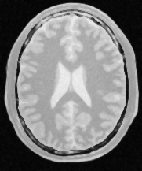

ITK
by Luis Ib'{a}\~{n}ez and Brad King
What Is ITK?
ITK (the Insight Toolkit)1 is a library for image analysis that was developed by the initiative, and mainly with the funding, of the US National Library of Medicine2. ITK can be thought of as a usable encyclopedia of image analysis algorithms, in particular for image filtering, image segmentation and image registration. The library was developed by a consortium involving universities, commercial companies, and many individual contributors from around the world. Development of ITK started in 1999, and recently after its 10th anniversary the library underwent a refactoring process intended to remove crusty code and to reshape it for the next decade.
Architectural Features
Software toolkits have a very synergistic relationship with their communities. They shape one another in a continuous iterative cycle. The software is continuously modified until it satisfies the needs of the community, while the community behaviors themselves are adapted based on what the software empowers or restricts them to do. In order to better understand the nature of ITK’s architecture, it is therefore very useful to get a sense of what kind of problems the ITK community is usually addressing, and how they tend to go about solving them.
The Nature of the Beast
::: center
If you did not understand the nature of the beasts,\ it would be of little use to know the mechanics of their anatomy.\ Dee Hock, One from Many: VISA and the Rise of Chaordic Organization :::
In a typical image analysis problem, a researcher or an engineer will take an input image, improve some characteristics of the image by, let’s say, reducing noise or increasing contrast, and then proceed to identify some features in the image, such as corners and strong edges. This type of processing is naturally well-suited for a data pipeline architecture, as shown in Figure 1.
To illustrate this point, Figure 2 shows an image of a brain from a magnetic resonance image (MRI), and the result of processing it with a median filter to reduce its level of noise, as well as the outcome of an edge detection filter used to identify the borders of anatomical structures.

For each one of these tasks, the image analysis community has developed a variety of algorithms, and continue developing new ones. Why do they continue doing this?, you may ask, and the answer is that image processing is a combination of science, engineering, art, and “cooking” skills. Claiming that there is an algorithmic combination that is the “right” answer to an image processing task is as misleading as claiming that there is such a thing as the “right” type of chocolate dessert for a dinner. Instead of pursuing perfection, the community strives to produce a rich set of tools that ensures that there will be no shortage of options to try when facing a given image processing challenge. This state of affairs, of course, comes at a price. The cost is that the image analyst has the difficult task of choosing among dozens of different tools that can be used in different combinations to achieve similar results.
The image analysis community is closely integrated with the research community. It is common to find that specific research groups become attached to the algorithmic families they have developed. This custom of “branding”, and up to some level “marketing”, leads to a situation where the best that the software toolkit can do for the community is to offer a very complete set of algorithmic implementations that they can try, and then mix and match to create a recipe that satisfies their needs.
These are some of the reasons why ITK was designed and implemented as a large collection of somewhat independent but coherent tools, the image filters, many of which can be used to solve similar problems. In this context, a certain level of “redundancy”—for example, offering three different implementations of the Gaussian filter—is not seen as a problem but as a valuable feature, because different implementations can be used interchangeably to satisfy constraints and exploit efficiencies with respect to image size, number of processors, and Gaussian kernel size that might be specific to a given imaging application.
The toolkit was also conceived as a resource that grows and renews itself continuously as new algorithms and better implementations become available, superseding existing ones, and as new tools are developed in response to the emerging needs of new medical imaging technologies.
Armed with this quick insight into the daily routine of the image analysts in the ITK community, we can now dive into the main features of the architecture:
-
Modularity
-
Data Pipeline
-
Factories
-
IO Factories
-
Streaming
-
Reusability
-
Maintainability
Modularity
Modularity is one of the main characteristics of ITK. This is a requirement that emerges from the way people in the image analysis community work when solving their problems. Most image analysis problems put one or more input images through a combination of processing filters that enhance or extract particular pieces of information from the images. Therefore there is no single large processing object, but rather myriad small ones. This structural nature of the image processing problem logically implies implementing the software as a large collection of image processing filters that can be combined in many different ways.
It is also the case that certain types of processing filters are clustered into families, inside which some of their implementation features can be factorized. This leads to natural grouping of the image filters into modules and groups of modules.
Modularity, therefore occurs at three natural levels in ITK:
-
Filter Level
-
Filter Family Level
-
Filter Family Group Level
At the image filter level, ITK has a collection of about 700 filters. Given that ITK is implemented in C++, this is a natural level at which every one of those filters is implemented by a C++ Class following object-oriented design patterns. At the filter family level, ITK groups filters together according to the nature of the processing that they perform. For example, all filters that are related to Fourier transforms will be put together into a Module. At the C++ level, Modules map to directories in the source tree, and to libraries once the software is compiled to its binary form. ITK has about 120 of these Modules. Each module contains:
-
The source code of the image filters that belong to that family.
-
A set of configuration files that describe how to build the module and list dependencies between this module and other modules.
-
The set of unit tests corresponding to each one of the filters.
The group level is mostly a conceptual division that has been drawn on top of the software to help locate filters in the source tree. Groups are associated with high-level concepts such as Filtering, Segmentation, Registration and IO. This hierarchical structure is illustrated in Figure 3. ITK currently has 124 modules, which are in turn aggregated into 13 major groups. The modules have a variety of different sizes. This size distribution, in bytes, is presented in Figure 4.
The modularization in ITK also applies to a set of third-party libraries that are not directly part of the toolkit, but that the toolkit depends upon, and that are distributed along with the rest of the code for the convenience of users. Particular examples of these third-party libraries are the image file format libraries: HDF5, PNG, TIFF, JPEG and OpenJPEG among others. The third party libraries are highlighted here because they account for about 56 percent of the size of ITK. This reflects the usual nature of open source applications that build upon existing platforms. The size distribution of the third-party libraries does not necessarily reflect the architectural organization of ITK, since we have adopted these useful libraries just as they have been developed upstream. However, the third-party code is distributed along with the toolkit, and partitioning it was one of the key driving directives for the modularization process.
The module size distribution is presented here because it is a measure of the proper modularization of the code. One can see the modularization of the code as a continuous spectrum that ranges from the extremes of having all the code in a single module, the monolithic version, to partitioning the code in a very large collection of equally sized modules. This size distribution was a tool used to monitor the progression of the modularization process, particularly to ensure that no big blocks of code were left in the same module unless true logical dependencies called for such grouping.
The modular architecture of ITK enables and facilitates:
-
Reduction and clarification of cross-dependencies
-
Adoption of code contributed by the community
-
Evaluation of quality metrics per module (for example, code coverage)
-
Building selected subsets of the toolkit
-
Packaging selected subsets of the toolkit for redistribution
-
Continued growth by progressive addition of new modules
The modularization process made it possible to explicitly identify and declare the dependencies between different portions of the toolkit as they were put into modules. In many cases, this exercise revealed artificial or incorrect dependencies that had been introduced in the toolkit over time, and that passed unnoticed when most of the code was put together in a few large groups.
The usefulness of evaluating quality metrics per module is twofold. First, it makes it easier to hold developers accountable for the modules which they maintain. Second, it makes it possible to engage in clean-up initiatives in which a few developers focus for a short period of time on raising the quality of a specific module. When concentrating on a small portion of the toolkit, it is easier to see the effect of the effort and to keep developers engaged and motivated.
To reiterate, we note that the structure of the toolkit reflects the organization of the community and in some cases the processes that have been adopted for the continuous growth and quality control of the software.
Data Pipeline
The staged nature of most image analysis tasks led naturally to the selection of a Data Pipeline architecture as the backbone infrastructure for data processing. The Data Pipeline enables:
-
Filter Concatenation: A set of image filters can be concatenated one after another, composing a processing chain in which a sequence of operations are applied to the input images.
-
Parameter Exploration: Once a processing chain is put together, it is easy to change the parameters of any filter in the chain, and to explore the effects that such change will have on the final output image.
-
Memory Streaming: Large images can be managed by processing only sub-blocks of the image at a time. In this way, it becomes possible to process large images that otherwise would not have fit into main memory.
Figures 1 and 2 have already presented a simplified representation of a data pipeline from the image processing point of view. Image filters typically have numeric parameters that are used to regulate the behavior of the filter. Every time one of the numeric parameters is modified, the data pipeline marks its output as “dirty” and knows that this particular filter, and all the downstream ones that use its output, should be executed again. This feature of the pipeline facilitates the exploration of parameter space while using a minimum amount of processing power for each instance of an experiment.
The process of updating the pipeline can be driven in such a way that only sub-pieces of the images are processed at a time. This is a mechanism necessary to support the functionality of streaming. In practice, the process is controlled by the internal passing of a RequestedRegion specification from one filter downstream to its provider filter upstream. This communication is done through an internal API and it is not exposed to the application developers.
For a more concrete example, if a Gaussian blur image filter is expecting to use as input a 100x100-pixel image that is produced by a median image filter, the blur filter can ask the median filter to produce only a quarter of the image, that is, an image region of size 100x25 pixels. This request can be further propagated upstream, with the caveat that every intermediate filter may have to add an extra border to the image region size in order to produce that requested output region size. There is more on data streaming in Section: Streaming.
Both a change in the parameters of a given filter, or a change in the specific requested region to be processed by that filter, will have the effect of marking the pipeline as “dirty” and indicating the need for a reexecution of that filter through the downstream filters in the pipeline.
Process and Data Objects
Two main types of objects were designed to hold the basic structure of the pipeline. They are the DataObject and the ProcessObject. The DataObject is the abstraction of classes that carry data; for example, images and geometrical meshes. The ProcessObject provides an abstraction for the image filters and mesh filters that process such data. ProcessObjects take DataObjects as input and perform some type of algorithmic transformation on them, such as the ones illustrated in Figure 2.
DataObjects are generated by ProcessObjects. This chain typically starts by reading a DataObject from disk, for example by using a ImageFileReader which is a type of ProcessObject. The ProcessObject that created a given DataObject is the only one that should modify such DataObject. This output DataObject is typically connected as input to another ProcessObject downstream in the pipeline.
This sequence is illustrated in Figure 5. The same DataObject may be passed as input to multiple ProcessObjects, as it is shown in the figure, where the DataObject is produced by the file reader at the beginning of the pipeline. In this particular case, the file reader is an instance of the ImageFileReader class, and the DataObject that it produces as output is an instance of the Image class. It is also common for some filters to require two DataObjects as input, as it is the case of the subtract filter indicated in the right side of the same figure.
The ProcessObjects and DataObjects are connected together as a side effect of constructing the pipeline. From the application developer’s point of view, the pipeline is linked together by invoking a sequence of calls involving the ProcessObjects such as:
writer->SetInput( canny->GetOutput() );
canny->SetInput( median->GetOutput() );
median->SetInput( reader->GetOutput() );
Internally, however, what is connected as a consequence of these calls is not one ProcessObject to the next ProcessObject, but the downstream ProcessObject to the DataObject that is produced by the upstream ProcessObject.
The internal chained structure of the pipeline is held together by three types of connections:
-
The
ProcessObjectholds a list of pointers to its outputDataObjects. OutputDataObjects are owned and controlled by theProcessObjectthat produces them. -
The
ProcessObjectholds a list of pointers to its inputDataObjects. InputDataObjects are owned by the upstreamProcessObject. -
The
DataObjectholds a pointer to its producerProcessObject. That happens to be theProcessObjectthat also owns and control thisDataObject.
This collection of internal links is later exploited to propagate calls upstream and downstream in the pipeline. During all these interactions, the ProcessObject retains control and ownership of the DataObject that it generates. The filters downstream gain access to the information about a given DataObject through the pointer links that are established as a consequence of the calls to the SetInput() and GetOutput() methods, without ever taking control of that input data. For practical purposes, filters should treat their input data as read-only objects. This is enforced in the API by using the C++ const keyword in the arguments of SetInput() methods. As a general rule, ITK embraces a const-correct external API, even though internally this const-correctness is overridden by some of the pipeline operations.
The Pipeline Class Hierarchy
The initial design and implementation of the Data Pipeline in ITK was derived from the Visualization Toolkit (VTK)3, a mature project at the time when ITK development began.
Figure 6 shows the object-oriented hierarchy of the pipeline objects in ITK. In particular, note the relationship between the basic Object, ProcessObject, DataObject, and some of the classes in the filter family and the data family. In this abstraction, any object that is expected to be passed as input to a filter, or to be produced as output by a filter, must derive from the DataObject. All filters that produce and consume data are expected to derive from the ProcessObject. The data negotiations required to move data through the pipeline are implemented partly in the ProcessObject and partly in the DataObject.
The LightObject and Object classes are above the dichotomy of the ProcessObject and DataObject. The LightObject and Object classes provide common functionalities such as the API for communications of Events, and the support for multi-threading.
The Inner Workings of the Pipeline
Figure 7 presents a UML sequence diagram describing the interactions between ProcessObjects and DataObjects in a minimal pipeline composed of an ImageFileReader, MedianImageFilter and ImageFileWriter.
The full interaction consist of four passes:
-
Update Output Information (upstream call sequence)
-
Update Requested Region (upstream call sequence)
-
Update Output Data (upstream call sequence)
-
Generate Data (downstream call sequence)
The whole process is triggered when an application invokes the Update() method in the last filter of the pipeline; in this concrete example this is the ImageFileWriter. The Update() call initiates the first pass that goes in the upstream direction. That is, from the last filter in the pipeline, towards the first filter in the pipeline.
The goal of this first pass is to ask the question, “How much data can you generate for me?” This question is codified in the method UpdateOutputInformation(). In this method, every filter computes the amount of image data that can be produced as output with the given amount of data available to it as input. Given that the amount of data input must be known first before the filter can answer the question about the amount of data output, the question has to propagate to the filter upstream, until it reaches a source filter that can answer the first question by itself. In this concrete example, that source filter is the ImageFileReader. This filter can figure out the size of its output by gathering information from the image file that it has been assigned to read. Once the first filter of the pipeline answers the question, then the subsequent filters downstream can compute their respective amount of output one after another, until they make it to the last filter of the pipeline.
The second pass, which also travels in the upstream direction, informs filters as to the amount of output that they are requested to produce during pipeline execution. The concept of Requested Region is essential in supporting the streaming capabilities of ITK. It makes it possible to tell the filters in the pipeline not to generate the entire full image, but to focus instead in a subregion of the image, the Requested Region. This is very useful when the image at hand is larger than the RAM available in the system. The call propagates from the last filter to the first one, and at every intermediate filter the requested region size is modified to take into account any extra borders that a filter may need in the input so it can generate a given region size as output. In our concrete example, the median filter will typically have to add a 2-pixel border to the size of its own input. That is, if the writer requests a region of size 500 x 500 pixels to the median filter, the median filter in its turn will request a region of 502 x 502 pixels to the reader, because the median filter by default needs a 3 x 3 pixel neighborhood region to compute the value of one output pixel. The pass is encoded in the PropagateRequestedRegion() method.
The third pass is intended to trigger the computation on the data inside the Requested Region. This pass also goes in the upstream direction and it is codified in the UpdateOutputData() method. Since every filter needs its input data before it can compute its output data, the call is passed to the respective upstream filter first, hence the upstream propagation. Upon return the current filter actually proceeds to computes its data.
The fourth and final pass proceeds downstream, and consists of the actual execution of computation by every filter. The call is codified in the GenerateData() method. The downstream direction is not a consequence of one filter making calls on its downstream partner, but rather of the fact that the UpdateOutputData() calls are executing in order from the first filter to the last filter. That is, the sequence happens downstream due to timing of the calls, and not due to what filter is driving the calls. This clarification is important because the ITK pipeline is by nature a Pull Pipeline, in which data is requested from the end, and the logic is also controlled from the end.
Factories
One of the fundamental design requirements of ITK is to provide support for multiple platforms. This requirement emerges from the desire to maximize the impact of the toolkit by making it usable to a broad community regardless of their platform of choice. ITK adopted the Factory design pattern to address the challenge of supporting fundamental differences among the many hardware and software platforms, without sacrificing the fitness of a solution to each one of the individual platforms.
The Factory pattern in ITK uses class names as keys to a registry of class constructors. The registration of factories happens at run time, and can be done by simply placing dynamic libraries in specific directories that ITK applications search at start-up time. This last feature provides a natural mechanism for implementing a plugin architecture in a clean and transparent way. The outcome is to facilitate the development of extensible image analysis applications, satisfying the need to provide an ever-growing set of image analysis capabilities.
IO Factories
The factory mechanism is particularly important when performing IO.
Embracing Diversity with Facades
The image analysis community has developed a very large set of file formats to store image data. Many of these file formats are designed and implemented with specific uses in mind, and therefore are fine-tuned to specific types of images. As a consequence, on a regular basis, new image file formats are conceived and promoted across the community. Aware of this situation, the ITK development team designed an IO architecture suitable for ease of extensibility, in which it is easy to add support for more and more file formats on a regular basis.
This IO extensible architecture is built upon the Factory mechanism described in the previous section. The main difference is that in the case of IO, the IO Factories are registered in a specialized registry that is managed by the ImageIOFactory base class, shown on the upper left corner of Figure 8. The actual functionality of reading and writing data from image file formats is implemented in a family of ImageIO classes, shown on the right side of Figure 8. These service classes are intended to be instantiated on demand when the user requests to read or write an image. The service classes are not exposed to the application code. Instead, applications are expected to interact with the facade classes:
-
ImageFileReader -
ImageFileWriter
These are the two classes with which the application will invoke code such as:
reader->SetFileName(``image1.png'');
reader->Update();
or
writer->SetFileName(``image2.jpg'');
writer->Update();
In both cases the call to Update() triggers the execution of the upstream pipeline to which these ProcessObjects are connected. Both the reader and the writer behave as one filter more in a pipeline. In the particular case of the reader, the call to Update() triggers the reading of the corresponding image file into memory. In the case of the writer, the call to Update() triggers the execution of the upstream pipeline that is providing the input to the writer, and finally results in an image being written out to disk into a particular file format.
These facade classes hide from the application developer the internal differences that are inherent to the particularities of each file format. They even hide the existence of the file format itself. The facades are designed in such a way that most of the time application developers do not need to know what file formats are expected to be read by the application. The typical application will simply invoke code such as
std::string filename = this->GetFileNameFromGUI();
writer->SetFileName( filename );
writer->Update();
These calls will work fine regardless of whether the content of the filename variable is any of the following strings:
-
image1.png
-
image1.jpeg
-
image1.tiff
-
image1.dcm
-
image1.mha
-
image1.nii
-
image1.nii.gz
where the file name extensions identify a different image file format in every case.
Know Thy Pixel Type
Despite the assistance that the file reader and writer facades provide, it is still up to the application developer to be aware of the pixel type that the application needs to process. In the context of medical imaging, it is reasonable to expect that the application developer will know whether the input image will contain a MRI, a mammogram or a CT scan, and therefore be mindful of selecting the appropriate pixel type and image dimensionality for each one of these different image modalities. This specificity of image type might not be convenient for application settings where users wants to read any image type, which are most commonly found in the scenarios of rapid prototyping and teaching. In the context of deploying a medical image application for production in a clinical setting, however, it is expected that the pixel type and dimension of the images will be clearly defined and specified based on the image modality to be processed. A concrete example, where an application manages 3D MRI scans, looks like:
typedef itk::Image< signed short, 3 > MRImageType;
typedef itk::ImageFileWriter< MRImageType > MRIWriterType;
MRIWriterType::Pointer writer = MRIWriterType::New();
writer->Update();
There is a limit, however, to how much the particularities of the image file formats can be hidden from the application developer. For example, when reading images from DICOM files, or when reading RAW images, the application developer may have to insert extra calls to further specify the characteristics of the file format at hand. DICOM files will be the most commonly found in clinical environments, while RAW images are still a necessary evil for exchanging data in the research environment.
Together But Separate
The self-contained nature of every IO Factory and ImageIO service class is also reflected in the modularization. Typically, an ImageIO class depends on a specialized library that is dedicated to managing a specific file format. That is the case for PNG, JPEG, TIFF and DICOM, for example. In those cases, the third-party library is managed as a self-contained module, and the specialized ImageIO code that interfaces ITK to that third-party library is also put in a module by itself. In this way, specific applications may disable many file formats that are not relevant to their domain, and can focus on offering only those file formats that are useful for the anticipated scenarios of that application.
Just as with standard factories, the IO factories can be loaded at run-time from dynamic libraries. This flexibility facilitates the use of specialized and in-house developed file formats without requiring all such file formats to be incorporated directly into the ITK toolkit itself. The loadable IO factories has been one of the most successful features in the architectural design of ITK. It has made it possible to easily manage a challenging situation without placing a burden on the code or obscuring its implementation. More recently, the same IO architecture has been adapted to manage the process of reading and writing files containing spatial transformations represented by the Transform class family.
Streaming
ITK was initially conceived as a set of tools for processing the images acquired by the Visible Human Project4. At the time, it was clear that such a large dataset would not fit in the RAM of computers that were typically available to the medical imaging research community. It is still the case that the dataset will not fit in the typical desktop computers that we use today. Therefore, one of the requirements for developing the Insight Toolkit was to enable the streaming of image data through the data pipeline. More specifically, to be able to process large images by pushing sub-blocks of the image throughout the data pipeline, and then assembling the resulting blocks on the output side of the pipeline.
This partitioning of the image domain is illustrated in Figure 9 for the concrete example of a median filter. The median filter computes the value of one output pixel as the statistical median of the pixel values from the input image in a neighborhood around the pixel. The size of that neighborhood is a numerical parameter of the filter. In this case we set it to 2 pixels, which means that we will take a neighborhood with a 2-pixel radius around our output pixel. This leads to a neighborhood of 5x5 pixels with the position of the output pixel in the middle, and a rectangular border of 2 pixels around it. This is usually called a Manhattan radius. When the median filter is asked to computed a particular Requested Region of the output image, it turns around and asks its upstream filter to provide a larger region that is formed by the Requested Region enlarged by a border of, in this case, 2 pixels. In the specific case of Figure 9, when asked for Region 2, of size 100x25 pixels, the median filter passes along that request to its upstream filter for a region of size 100x29 pixels. The 29-pixel size in the vertical direction is computed as 25 pixels plus two borders of 2-pixel radius each. Note that the horizontal dimension is not enlarged in this case because it is already at the maximum that the input image can provide; therefore, the enlarged request of 104 pixels (100 pixels plus two borders of 2 pixels) gets cropped to the maximum size of the image, which is 100 pixels in the horizontal dimension.
ITK filters that operate on neighborhoods will take care of the boundary conditions by using one of the three typical approaches: considering a null value outside of the image, mirroring the pixels’ values across the border, or repeating the border value on the outside. In the case of the median filter, a zero-flux Neumann boundary condition is used, which simply means that the pixels outside of the region border are assumed to be a repetition of the pixel values found in the last pixels inside the border.
It is a well-kept dirty little secret of the image processing literature that most of the implementation difficulties with image filters are related to proper management of boundary conditions. This is a particular symptom of the disconnection between the theoretical training found in many textbooks and the software practice of image processing. In ITK this was managed by implementing a collection of image iterator classes and an associated family of boundary condition calculators. These two helper classes families hide from image filters the complexities of managing boundary conditions in N-dimensions.
The streaming process is driven from outside the filter, typically by the ImageFileWriter or the StreamingImageFilter. These two classes implement the streaming functionality of taking the total size of the image and partitioning it into a number of divisions requested by the application developer. Then, during their Update() call, they go in an iteration loop asking for each one of the intermediate pieces of the image. At that stage, they take advantage of the SetRequestedRegion() API described in Figure 7 in Section: Data Pipeline. That constrains the computation of the upstream pipeline to a subregion of the image.
The application code driving the streaming process looks like
median->SetInput( reader->GetOutput() );
median->SetNeighborhoodRadius( 2 );
writer->SetInput( median->GetOutput() );
writer->SetFileName( filename );
writer->SetNumberOfStreamDivisions( 4 );
writer->Update();
where the only new element is the SetNumberOfStreamDivisions() call that defines the number of pieces into which the image will be split for the purpose of streaming it through the pipeline. To match the example of Figure 9 we have used four as the number of regions to split the image into. This means that the writer is going to trigger the execution of the median filter four times, each time with a different Requested Region.
There are interesting similarities between the process of streaming and the process of parallelizing the execution of a given filter. Both of them rely on the possibility of dividing the image processing work into image chunks that are processed separately. In the streaming case, the image chunks are processed across time, one after another, while in the parallelization case the image chunks are assigned to different threads, which in turn are assigned to separate processor cores. At the end, it is the algorithmic nature of the filter that will determine whether it is possible to split the output image into chunks that can be computed independently based on a corresponding set of image chunks from the input image. In ITK, streaming and parallelization are actually orthogonal, in the sense that there is an API to take care of the streaming process, and a separate API dedicated to support the implementation of parallel computation base on multiple-threads and shared memory.
Streaming, unfortunately, can not be applied to all types of algorithms. Specific cases that are not suitable for streaming are:
-
Iterative algorithms that, to compute a pixel value at every iteration, require as input the pixel values of its neighbors. This is the case for most PDE-solving-based algorithms, such as anisotropic diffusion, demons deformable registration, and dense level sets.
-
Algorithms that require the full set of input pixel values in order to compute the value of one of the output pixels. Fourier transform and Infinite Impulse Response (IIR) filters, such as the Recursive Gaussian filter, are examples of this class.
-
Region propagation or front propagation algorithms in which the modification of pixels also happens in an iterative way but for which the location of the regions or fronts can not be systematically partitioned in blocks in a predictable way. Region growing segmentation, sparse level sets, some implementations of mathematical morphology operations and some forms of watersheds are typical examples here.
-
Image registration algorithms, given that they require access to the full input image data for computing metric values at every iteration of their optimization cycles.
Fortunately, on the other hand, the data pipeline structure of ITK enables support for streaming in a variety of transformation filters by taking advantage of the fact that all filters create their own output, and therefore they do not overwrite the memory of the input image. This comes at the price of memory consumption, since the pipeline has to allocate both the input and output images in memory simultaneously. Filters such as flipping, axes permutation, and geometric resampling fall in this category. In these cases, the data pipeline manages the matching of input regions to output regions by requiring that every filter provide a method called GenerateInputRequestedRegion() that takes as an argument a rectangular output region. This method computes the rectangular input region that will be needed by this filter to compute that specific rectangular output region. This continuous negotiation in the data pipeline makes it possible to associate, for every output block, the corresponding section of input image that is required for computation.
To be more precise here, we must say therefore that ITK supports streaming—but only in algorithms that are “streamable” in nature. That said, in the spirit of being progressive regarding the remaining algorithms, we should qualify this statement not by claiming that “it is impossible to stream such algorithms”, but rather that “our typical approach to streaming is not suitable for these algorithms” at this point, and that hopefully new techniques will be devised by the community in the future to address these cases.
Lessons Learned
Reusability
The principle of reusability can also be read as “avoidance of redundancy”. In the case of ITK, this has been achieved with a three-pronged approach.
-
First, the adoption of object-oriented programming, and in particular the proper creation of class hierarchies where common functionalities are factorized in base classes.
-
Second, the adoption of generic programming, implemented via the heavy use of C++ templates, factorizing behaviors that are identified as patterns.
-
Third, the generous use of C++ macros has also permitted reuse of standard snippets of code that are needed in myriad places across the toolkit.
Many of these items may sound like platitudes and appear obvious today, but when ITK development started in 1999 some of them were not that obvious. In particular, at the time the support most C++ compilers offered for templates did not quite follow a consistent standard. Even today, decisions such as the adoption of generic programming and the use of a widely templated implementation continue to be controversial in the community. This is manifested in the communities that prefer to use ITK via the wrapping layers to Python, Tcl or Java.
Generic Programming
The adoption of generic programming was one of the defining implementation features of ITK. It was a difficult decision in 1999 when the compiler support for C++ templates was rather fragmented, and the Standard Template Library (STL) was still considered a bit exotic.
Generic programming was adopted in ITK by embracing the use of C++ templates for implementing generalization of concepts and in this way increasing code reuse. The typical example of C++ template parameterization in ITK is the Image class, that can be instantiated in the following way:
typedef unsigned char PixelType;
const unsigned int Dimension = 3;
typedef itk::Image< PixelType, Dimension > ImageType;
ImageType::Pointer image = ImageType::New();
In this expression, the application developer chooses the type to be used to represent pixels in the image, as well as the dimension of the image as a grid in space. In this particular example, we chose to use an 8-bit pixel represented in an unsigned char type, for a 3D image. Thanks to the underlying generic implementation, it is possible to instantiate images of any pixel type and any dimension in ITK.
To make it possible to write these expressions, ITK developers had to implement the Image class by being very careful with the assumptions made about the pixel type. Once the application developer has instantiated the image type, the developer can create objects of that type, or proceed to instantiate image filters whose types, in turn, depend on the image type. For example:
typedef itk::MedianImageFilter< ImageType, ImageType> FilterType;
FilterType::Pointer median = FilterType::New();
The algorithmic specificity of different image filters restricts the actual pixel types that they can support. For example, some image filters expect the image pixel type to be an integer scalar type while some other filters expect the pixel type to be a vector of floating point numbers. When instantiated with inappropriate pixel types, these filters will produce compilation errors or will result in erroneous computational results. To prevent incorrect instantiations and to facilitate the troubleshooting of compilation errors, ITK adopted the use of concept checking that is based on forcing the exercise of certain expected features of the types, with the goal of producing early failures combined with human-readable error messages.
C++ templates are also exploited in certain sections of the toolkit in the form of Template Metaprogramming, with the goal of increasing run-time speed performance of the code, in particular for unrolling loops that control the computation of low-dimensional vectors and matrices. Ironically, we have found over time that certain compilers have become smarter at figuring out when to unroll loops, and no longer need the help of Template MetaProgramming expressions in some cases.
Knowing When to Stop
There is also the general risk of doing “too much of a good thing”, meaning, there is a risk of overusing templates, or overusing macros. It is easy to go overboard and end up creating a new language on top of C++ that is essentially based on the use of templates and macros. This is a fine line, and it demands continuous attention from the development team to make sure that the language features are properly used without being abused.
As a concrete example, the widespread use of explicitly naming types via C++ typedefs has proved to be particularly important. This practice plays two roles: on the one hand it provides a human-readable informative name describing the nature of the type and its purpose; on the other hand, it ensures that the type is used consistently across the toolkit. As an example, during the refactoring of the toolkit for its 4.0 version, a massive effort was invested in collecting the cases where C++ integer types such as int, unsigned int, long and unsigned long were used and to replace them with types named after the proper concept that the associated variables were representing. This was the most costly part of the task of ensuring that the toolkit was able to take advantage of 64-bit types for managing images larger than four gigabytes in all platforms. This task was of the utmost importance for promoting the use of ITK in the fields of microscopy and remote sensing, where image of tens of gigabytes in size are common.
Maintainability
The architecture satisfies the constraints that minimize maintenance cost.
-
Modularity (at the class level)
-
Many small files
-
Code reuse
-
Repeated patterns
These characteristics reduce maintenance cost in the following ways:
-
Modularity (at the class level) makes it possible to enforce test-driven development techniques at the image filter level, or in general the ITK class level. Stringent testing discipline applied to small and modular pieces of code has the advantage of reducing the pools of code where bugs can hide, and with the natural decoupling that results from modularization, it is a lot easier to locate defects and eliminate them.
-
Many small files facilitate the assignment of portions of the code to specific developers, and simplify the tracking of defects when they are associated with specific commits in the revision control system. The discipline of keeping small files also leads to the enforcement of the golden rule of functions and classes: Do one thing, and do it right.
-
Code reuse: When code is reused (instead of being copy-pasted and reimplemented) the code itself benefits from the higher level of scrutiny that results from being exercised in many different circumstances. It leads more eyes to look at the code, or at least at the effects of the code, and so the code benefits from Linus’s Law: “Given enough eyeballs, all bugs are shallow.”
-
Repeated patterns simplify the work of maintainers, who in reality account for more than 75% of the cost of software development over the lifetime of a project. Using coding patterns that are consistently repeated in different places in the code makes it a lot easier for a developer to open a file and quickly understand what the code is doing, or what it is intended to do.
As the developers got involved in regular maintenance activities they were exposed to some “common failures”, in particular:
-
Assumptions that some filters make regarding specific pixel types for their input or output images, but that are not enforced via types or concept checking, and that are not specified in the documentation.
-
Not writing for readability. This is one of the most common challenges for any software whose new algorithm implementations originate in the research community. It is common in that environment to write code that “just works”, and to forget that the purpose of code is not just to be executed at run time, but to be easily read by the next developer. Typical good rules of “clean code” writing—for example, write small functions that do one thing and one thing only (the Single Responsibility Principle and the Principle of Least Surprise), adhere to proper naming of variables and functions—tend to be ignored when researchers are excited about getting their new shiny algorithm to work.
-
Ignoring failure cases and error management. It is common to focus on the “nice cases” of data processing and to fail to provide code for managing all the cases that can go wrong. Adopters of the toolkit quickly run into such cases once they start developing and deploying applications in the real world.
-
Insufficient testing. It requires a lot of discipline to follow the practice of test-driven development, especially the notion of writing the tests first and only implementing functionalities as you test them. It is almost always the case that bugs in the code are hiding behind the cases that were skipped while implementing the testing code.
Thanks to the communication practices of open source communities, many of these items end up being exposed through questions that are commonly asked in the mailing lists, or are directly reported as bugs by users. After dealing with many such issues, developers learn to write code that is “good for maintenance”. Some of these traits apply to both coding style and the actual organization of the code. It is our view that a developer only reaches mastery after spending some time—at least a year—doing maintenance and getting exposed to “all the things that can go wrong”.
The Invisible Hand
Software should look like it was written by a single person. The best developers are the ones who write code that, should they be hit by the proverbial bus, can be taken over by anybody else. We have grown to recognize that any trace of a “personal touch” is an indication of a defect introduced in the software.
In order to enforce and promote code style uniformity, the following tools have proved to be very effective:
-
KWStyle5 for automatic source code style checking. This is a simplified C++ parser that checks coding style and flags any violations.
-
Gerrit6 for regular code reviews. This tools serves two purposes: On one hand, it prevents immature code from entering the code base by distilling its errors, deficiencies and imperfections during iterative review cycles where other developers contribute to improve the code. On the other hand, it provides a virtual training camp in which new developers get to learn from more experienced developers (read “experienced” as have made all the mistakes and know where the bodies are buried…) how to improve the code and avoid known problems that have been observed during maintenance cycles.
-
Git hooks that enforce the use of the KWStyle and Gerrit and that also perform some of their own checks. For example, ITK uses Git hooks that prevent commits of code with tabs or with trailing blank spaces.
-
The team has also explored the use of Uncrustify7 as a tool for enforcing a consistent style.
It is worth emphasizing that uniformity of style is not a simple matter of aesthetic appeal, it is really a matter of economics. Studies on the Total Cost of Ownership (TCO) of software projects have estimated that in the life-cycle of a project, the cost of maintenance will be about 75% of the TCO, and given that maintenance cost is applied on an annual basis, it typically surpasses the cost of initial development costs by the first five years of the life-cycle of a software project8. Maintenance is estimated to be about 80% of what software developers actually do, and when engaged in that activity the large majority of the developer’s time is dedicated to reading someone else’s code, trying to figure out what it was supposed to do9. Uniform style does wonders for reducing the time it takes for developers to immerse themselves in a newly open source file and understand the code before they make any modifications to it. By the same token, it reduces the chances that developers will misinterpret the code and make modifications that end up introducing new bugs when they were honestly trying to fix old bugs10.
The key for making these tools effective is to make sure that they are:
-
Available to all developers, hence our preference for Open Source tools.
-
Run on a regular basis. In the case of ITK, these tools have been integrated in the Nightly and Continuous Dashboard builds managed by CDash11.
-
Run as close as possible to the point where the code is being written, so that deviations can be fixed immediately, and so developers quickly learn what kind of practices break style rules.
Refactoring
ITK started in 2000 and grew continuously until 2010. In 2011, thanks to an infusion of federal funding investment, the development team had the truly unique opportunity to embark on a refactoring effort. The funding was provided by the National Library of Medicine as part of the initiative of the American Recovery and Reinvestment Act (ARRA). This was not a minor undertaking. Imagine you have been working on a piece of software for over a decade, and you are offered the opportunity to clean it up; what would you change?
This opportunity for widespread refactoring is very rare. For the previous ten years, we had relied on the daily effort of performing small local refactorings, cleaning up specific corners of the toolkit as we ran into them. This continuous process of clean up and improvement takes advantage of the massive collaboration of open source communities, and it is safely enabled by the testing infrastructure driven by CDash, which regularly exercises about 84% of the code in the toolkit. Note that in contrast, the average code coverage of software industry testing is estimated to be only 50%.
Among the many things that were changed in the refactoring effort, the ones that are most relevant to the architecture are:
-
Modularization was introduced in the toolkit
-
Integer types were standardized
-
Typedefs were fixed to allow management of images larger than 4 GB on all platforms
-
The software process was revised:
-
Migrated from CVS to Git
-
Introduced code review with Gerrit
-
Introduced testing on demand with CDash@home
-
Improved method for downloading data for unit testing
-
Deprecated support for obsolete compilers
-
Improved support for many IO image file formats including:
-
DICOM
-
JPEG2000
-
TIFF (BigTIFF)
-
HDF5
-
Introduced a framework for supporting GPU computation
-
Introduced support for video processing
-
Added a bridge to OpenCV
-
Added a bridge to VXL
Maintenance based on incremental modifications—tasks such as adding features to an image filter, improving performance of a given algorithm, addressing bug reports, and improving documentation of specific image filters—works fine for the local improvement of specific C++ classes. However, a massive refactoring is needed for infrastructure modifications that affect a large number of classes across the board, such as the ones listed above. For example, the set of changes needed to support images larger than 4 GB was probably one of the largest patches ever applied to ITK. It required the modification of hundreds of classes and could not have been done incrementally without incurring in a great deal of pain. The modularization is another example of a task that could not have been done incrementally. It truly affected the entire organization of the toolkit, how its testing infrastructure works, how testing data is managed, how the toolkit is packaged and distributed, and how new contributions will be encapsulated to be added to the toolkit in the future.
Reproducibility
One of the early lessons learned in ITK was that the many papers published in the field were not as easy to implement as we were led to believe. The computational field tends to over-celebrate algorithms and to dismiss the practical work of writing software as “just an implementation detail”.
That dismissive attitude is quite damaging to the field, since it diminishes the importance of the first-hand experience with the code and its proper use. The outcome is that most published papers are simply not reproducible, and when researchers and students attempt to use such techniques they end up spending a lot of time in the process and deliver variations of the original work. It is actually quite difficult, in practice, to verify if an implementation matches what was described in a paper.
ITK disrupted, for the good, that environment and restored a culture of DIY to a field that had grown accustomed to theoretical reasoning, and that had learned to dismiss experimental work. The new culture brought by ITK is a practical and pragmatic one in which the virtues of the software are judged by its practical results and not by the appearance of complexity that is celebrated in some scientific publications. It turns out that in practice the most effective processing methods are those that would appear to be too simple to be accepted for a scientific paper.
The culture of reproducibility is a continuation of the philosophy of test driven development, and systematically results in better software; higher clarity, readability, robustness and focus.
In order to fill the gap of lack of reproducible publications, the ITK community created the Insight Journal12. It is an open-access, fully online publication in which contributions are required to include code, data, parameters, and tests in order to enable verification by reproducibility. Articles are published online less than 24 hours after submission. Then they are made available for peer-review by any member of the community. Readers get full access to all the materials accompanying the article, namely source code, data, parameters, and testing scripts. The Journal has provided a productive space for sharing new code contributions which from there make their way into the code base. The Journal recently received its 500th article, and continues to be used as the official gateway for new code to be added to ITK.
-
See The Architecture of Open Source Applications, Volume 1 ↩
-
http://www.nlm.nih.gov/research/visible/visible_human.html ↩
-
“Software Development Cost Estimating Handbook”, Volume I, Naval Center for Cost Analysis, Air Force Cost Analysis Agency, 2008. ↩
-
“Clean Code, A Handbook of Agile Software Craftsmanship”, Robert C. Martin, Prentice Hall, 2009 ↩
-
“The Art of Readable Code”, Dustin Boswell, Trevor Foucher, O’Reilly, 2012 ↩